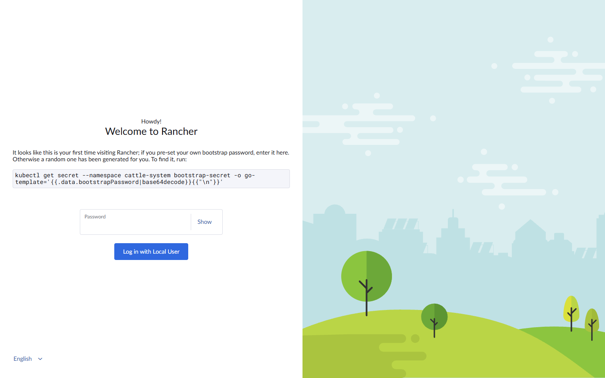
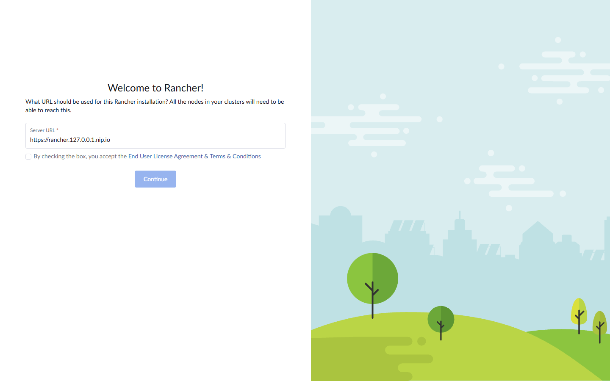
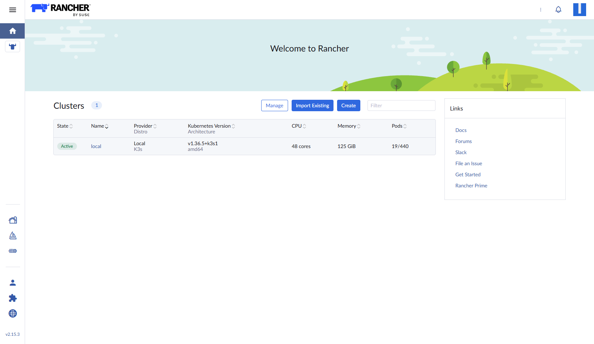
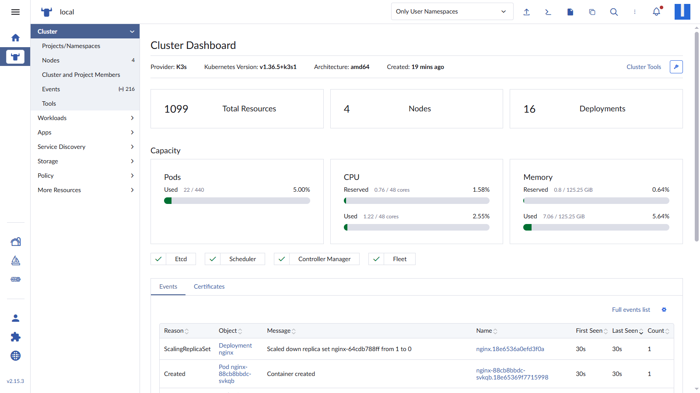
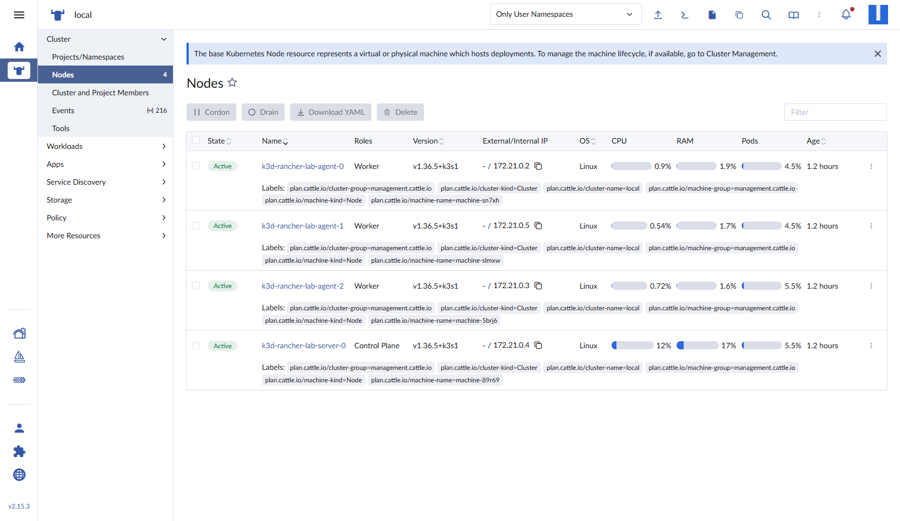
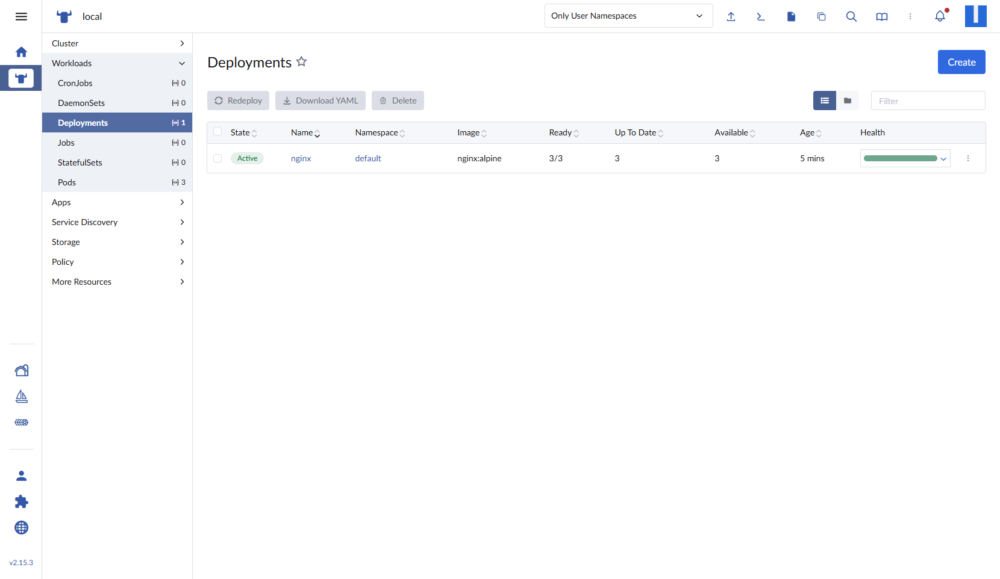
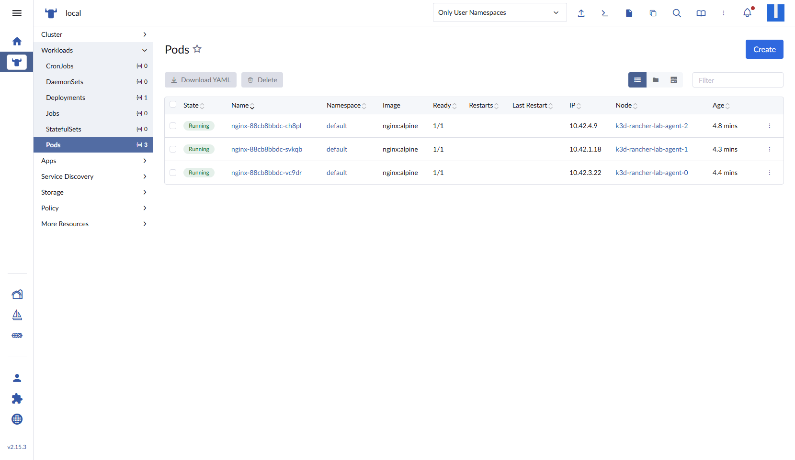
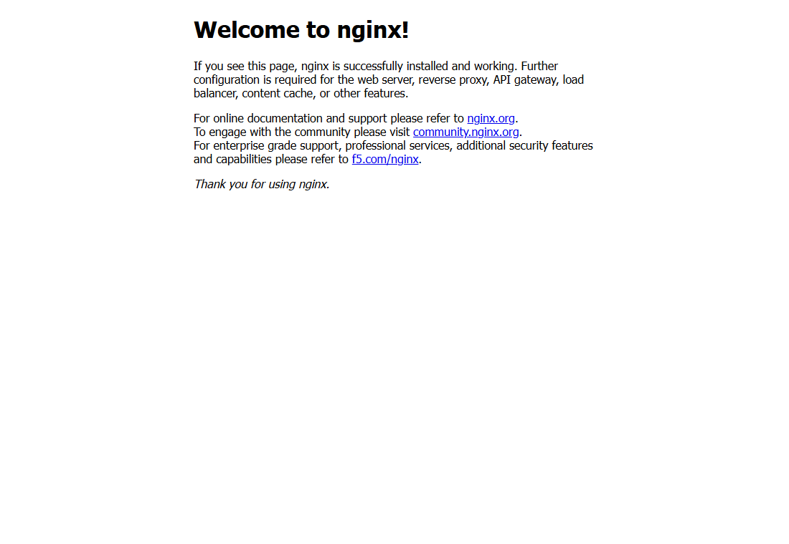

I wanted a Kubernetes cluster that behaves like the real thing but lives on one Windows PC: one control plane, three schedulable workers, an ingress controller, and a proper management UI. Not a toy single-node setup — a cluster where I can demonstrate node scheduling, pod anti-affinity, and self-service deployments.
The trick is k3d. It runs k3s inside Docker containers, so every "node" is a real k3s node with its own kubelet and containerd, all sharing one Windows machine. Four nodes take about two minutes to create.
Here is the exact setup I built, including the problems I hit and how I fixed them.
Why k3d instead of k3s directly in WSL?
Installing k3s inside WSL2 gives you one node. To get three workers you would need three more Linux environments, plus a lot of networking glue. k3d gives you the same multi-node topology with one command, and k3d cluster delete removes everything cleanly.
What you get:
- 1 × control plane (
server-0) - 3 × workers (
agent-0,agent-1,agent-2) - A Docker-based load balancer in front of the cluster for ports 80 and 443
- Normal
kubectlaccess from Windows
What you need
- Windows 10 or 11 with WSL2 enabled
- Docker Desktop with the WSL2 backend
- At least 8 GB of free RAM (the lab used roughly 3–4 GB)
- Ports 80, 443, and 6443 free on the host
kubectl,helm, andk3d
I pinned k3s v1.36.5, because Rancher 2.15 supports Kubernetes 1.34–1.36. The newest k3s at the time (v1.37) was not yet supported by Rancher, and this mismatch is the kind of thing that causes confusing failures later.
How the pieces connect
Docker Desktop runs the k3d cluster inside WSL2. k3d publishes port 443 to the host, Traefik v3.7 inside the cluster terminates TLS, and Rancher 2.15.3 runs as a workload behind it. One server node (server-0) holds the control plane and three agent nodes (agent-0 to agent-2) carry the workloads. From the Windows browser, the whole lab is reachable at https://rancher.127.0.0.1.nip.io.
Step 1 — Install the tooling
winget install -e --id Docker.DockerDesktop
winget install -e --id k3d.k3d
winget install -e --id Helm.Helm
winget install -e --id Kubernetes.kubectl
Start Docker Desktop and confirm the engine is up:
docker info --format '{{.ServerVersion}}'
# 29.8.2
Check k3d:
k3d version
# k3d version v5.9.0
Step 2 — Create the cluster
This is the whole cluster definition:
k3d cluster create rancher-lab `
--servers 1 --agents 3 `
--image rancher/k3s:v1.36.5-k3s1 `
--api-port 127.0.0.1:6443 `
--port 80:80@loadbalancer --port 443:443@loadbalancer `
--k3s-arg "--disable=traefik@server:0" `
--k3s-arg "--tls-san=rancher.127.0.0.1.nip.io@server:0" `
--wait
What each flag does:
| Flag | Why |
|---|---|
--servers 1 --agents 3 |
One control plane, three workers |
--image rancher/k3s:v1.36.5-k3s1 |
Pin a k3s version supported by Rancher |
--api-port 127.0.0.1:6443 |
Stable Kubernetes API endpoint on the host |
--port 80:80@loadbalancer |
Publish HTTP through the k3d load balancer |
--k3s-arg "--disable=traefik@server:0" |
Disable the bundled Traefik so the Helm-managed Traefik owns ports 80/443 |
--tls-san=rancher.127.0.0.1.nip.io |
Add the Rancher hostname to the API server certificate |
k3d writes a k3d-rancher-lab context into your kubeconfig and switches to it automatically.
Step 3 — Verify the nodes
kubectl get nodes -o wide
NAME STATUS ROLES VERSION
k3d-rancher-lab-agent-0 Ready <none> v1.36.5+k3s1
k3d-rancher-lab-agent-1 Ready <none> v1.36.5+k3s1
k3d-rancher-lab-agent-2 Ready <none> v1.36.5+k3s1
k3d-rancher-lab-server-0 Ready control-plane v1.36.5+k3s1
Four Ready nodes. The control plane does not run your application pods by default.
Step 4 — Ingress with Traefik
ingress-nginx was archived in March 2026 — its last release was v1.15.1 — so a new cluster should not start on it. Traefik is the ingress controller bundled with k3s and is actively maintained, so this lab uses the Traefik Helm chart.
k3d's load balancer forwards port 80 and 443 to the node, which means the controller must listen on every node. The chart's DaemonSet mode with hostPort does exactly that:
helm repo add traefik https://traefik.github.io/charts
helm repo update
helm install traefik traefik/traefik \
-n traefik --create-namespace \
--set deployment.kind=DaemonSet \
--set ports.web.hostPort=80 \
--set ports.websecure.hostPort=443 \
--set service.spec.type=ClusterIP \
--wait
We disabled k3s's bundled Traefik when creating the cluster, so this Helm release is the only controller binding ports 80 and 443.
The chart creates the traefik IngressClass and marks it as the default, so Ingress objects route through it even without an explicit class:
kubectl -n traefik get ds traefik
kubectl get ingressclass
NAME DESIRED CURRENT READY UP-TO-DATE AVAILABLE AGE
traefik 4 4 4 4 4 2m
Then cert-manager, which Rancher uses to issue its self-signed certificate:
helm repo add jetstack https://charts.jetstack.io
helm repo update
helm install cert-manager jetstack/cert-manager \
-n cert-manager --create-namespace \
--set crds.enabled=true \
--wait
Step 5 — Install Rancher
helm repo add rancher-stable https://releases.rancher.com/server-charts/stable
helm repo update
helm install rancher rancher-stable/rancher \
-n cattle-system --create-namespace \
--set hostname=rancher.127.0.0.1.nip.io \
--set bootstrapPassword='RancherLab2026!' \
--set replicas=1 \
--set ingress.tls.source=rancher \
--set ingress.ingressClassName=traefik \
--wait --timeout 12m
Rancher pulls a large image, so this step is the slowest. If it times out, the pods may still be pulling; check kubectl -n cattle-system get pods before reinstalling.
Open https://rancher.127.0.0.1.nip.io. The self-signed certificate means the browser will warn you once.
Step 6 — First login

The bootstrap login. Rancher tells you exactly where the password lives.
You already know the bootstrap password because you passed it to Helm. If you did not, retrieve it:
kubectl get secret --namespace cattle-system bootstrap-secret \
-o go-template='{{.data.bootstrapPassword|base64decode}}{{"\n"}}'
After logging in, Rancher asks for the server URL and acceptance of the terms:

First-run setup: confirm the server URL and accept the EULA.
Rancher 2.15 drops you straight onto the dashboard. Change the bootstrap password afterwards from the user menu → Account and API Keys.

The cluster list. One cluster — local — running k3s v1.36.5.
Step 7 — Meet the cluster
Open the local cluster to get the cluster dashboard:

Cluster dashboard: provider, Kubernetes version, capacity, and events.
Then look at Cluster → Nodes:

This is the screenshot that makes the lab worth it: one Control Plane and three Worker nodes, all Active, all on the same k3s version.
Step 8 — Deploy a 3-replica application
To prove the topology is real, deploy nginx with three replicas, one per worker. Pod anti-affinity prevents two replicas from landing on the same node, and node affinity keeps the control plane free for cluster components.
apiVersion: apps/v1
kind: Deployment
metadata:
name: nginx
namespace: default
spec:
replicas: 3
selector:
matchLabels:
app: nginx
template:
metadata:
labels:
app: nginx
spec:
affinity:
nodeAffinity:
requiredDuringSchedulingIgnoredDuringExecution:
nodeSelectorTerms:
- matchExpressions:
- key: node-role.kubernetes.io/control-plane
operator: DoesNotExist
podAntiAffinity:
requiredDuringSchedulingIgnoredDuringExecution:
- labelSelector:
matchLabels:
app: nginx
topologyKey: kubernetes.io/hostname
containers:
- name: nginx
image: nginx:alpine
ports:
- containerPort: 80
resources:
requests: { cpu: 50m, memory: 64Mi }
limits: { cpu: 200m, memory: 128Mi }
---
apiVersion: v1
kind: Service
metadata:
name: nginx
namespace: default
spec:
selector:
app: nginx
ports:
- port: 80
targetPort: 80
---
apiVersion: networking.k8s.io/v1
kind: Ingress
metadata:
name: nginx
namespace: default
spec:
ingressClassName: traefik
rules:
- host: nginx.127.0.0.1.nip.io
http:
paths:
- path: /
pathType: Prefix
backend:
service:
name: nginx
port:
number: 80
kubectl apply -f demo-app.yaml
kubectl -n default rollout status deploy/nginx
In Rancher, Workloads → Deployments shows the deployment healthy at 3/3:

Workloads → Pods shows the scheduling result:

Three pods, three different worker nodes. That is the whole point of a multi-node lab.
The ingress answers on nginx.127.0.0.1.nip.io:

Problems I hit (and fixes)
ImagePullBackOff with no such host
The first Rancher pod would not start: failed to resolve reference "docker.io/rancher/rancher:v2.15.3" and lookup registry-1.docker.io: no such host.
DNS inside the Docker VM was flaky. The fix was to give Docker Engine explicit upstream DNS servers in %USERPROFILE%\.docker\daemon.json, then restart Docker Desktop:
{
"builder": { "gc": { "defaultKeepStorage": "20GB", "enabled": true } },
"experimental": false,
"dns": ["1.1.1.1", "8.8.8.8"]
}
I used my ISP's resolvers plus a public fallback. After the restart, the pull completed on the next attempt.
Rancher stuck in ContainerCreating
That was the same DNS problem. Watch the events instead of guessing:
kubectl -n cattle-system get events --sort-by=.lastTimestamp
Port 80 or 443 already in use
k3d fails fast if the host ports are taken. Either stop the other service (IIS, another container) or map different host ports:
--port 8080:80@loadbalancer --port 8443:443@loadbalancer
Then use http://rancher.127.0.0.1.nip.io:8080.
Browser refuses plain HTTP to a private address
Some Chromium-based browsers block http:// to 127.0.0.1 hosts. Use HTTPS, or a locally trusted certificate, when demoing ingress endpoints.
Rancher routes changed in 2.15
Deep links like /explorer/workloads now return "Resource type workloads not found". The current paths are /explorer/apps.deployment and /explorer/pod. When in doubt, navigate through the sidebar instead of bookmarking old URLs.
Traefik answers 404 on HTTPS
An Ingress is attached to the web entrypoint (port 80) by default. Port 443 only answers when the router has TLS enabled. Either add a tls: block with a certificate secret, or turn on TLS for the router:
metadata:
annotations:
traefik.ingress.kubernetes.io/router.entrypoints: websecure
traefik.ingress.kubernetes.io/router.tls: "true"
Without one of those, https:// returns 404 while http:// works.
ingress-nginx is retired
The ingress-nginx project was archived on 23 March 2026 and its final release was v1.15.1. Any guide that installs ingress-nginx/ingress-nginx or sets controller.hostPort.enabled is describing an unmaintained controller. Traefik, used above, is the maintained default in k3s.
Tear down
k3d cluster delete rancher-lab
That removes the four nodes, the load balancer, and the Docker network. Your kubeconfig context goes with it. If you added the explicit DNS entries only for this lab, remove them from daemon.json and restart Docker Desktop.
Final thoughts
For a lab, k3d is the sweet spot: a real multi-node k3s cluster, a real ingress path, and a real Rancher install — with none of the VM overhead. Total disk cost is a few gigabytes of images, and the whole cluster can be recreated from one command.
The next things I want to add are persistent storage through the local-path provisioner, a GitOps demo with Fleet (already bundled with Rancher), and a second cluster registered as a downstream cluster to show Rancher's multi-cluster view.